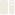

Dashboard Kala.Clock
12:00:00
Selasa, 29 Sep 2026
Selamat Datang di Kala.Clock IoT Smart Display
Broker

Database
Jam12:00:00
Pengaturan Jam IoT
Tampilan Running Text
Atur teks berjalan dan mode tampilan jam iot.
40 ms
Kecerahan & Daya Layar
Atur intensitas cahaya jam iot dengan 3 mode atau slider
80
Kalibrasi Jam dengan RTC / NTP
Kalibrasi ulang jam iot menggunakan RTC atau NTP
12:00:00
+8
Atur Jam Secara Real Time
Kirim pengaturan baru secara real time ke jam iot dengan cepat